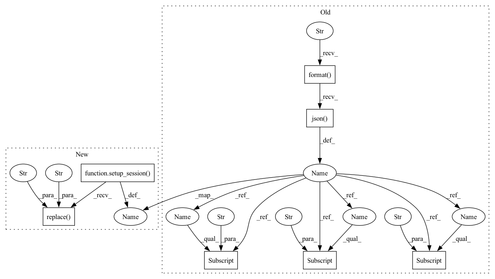

Pattern ID :32840
Before Change
@authentication.required
def list_trials(args: Namespace) -> None:
r = api.get(args.master, "experiments/{}/summary".format( args.experiment_id) )
experiment = r.json()
headers = ["Trial ID", "State", "H-Params", "Start Time", "End Time", "// of Batches"]
values = [
[
t["id"] ,
t["state"] ,
json.dumps(t["hparams"], indent=4),
render.format_time(t["start_time"] ),
render.format_time(t["end_time"]),
t["total_batches_processed"],
]
for t in experiment["trials"]
]
render.tabulate_or_csv(headers, values, args.csv)After Change
@authentication.required
def list_trials(args: Namespace) -> None:
r = bindings.get_GetExperimentTrials(setup_session( args) , experimentId=args.experiment_id)
trials = r.trials
headers = ["Trial ID", "State", "H-Params", "Start Time", "End Time", "// of Batches"]
values = [
[
t.id,
t.state.value.replace("STATE_" , "" ) ,
json.dumps(t.hparams, indent=4),
render.format_time(t.startTime),
render.format_time(t.endTime),
t.totalBatchesProcessed,
]
for t in trials
]
render.tabulate_or_csv(headers, values, args.csv)In pattern: SUPERPATTERN
Frequency: 3
Non-data size: 7
Instances Fragment ID: 95311720
Project Name: determined-ai/determined
Commit Name: 22eeac453d08836244d78917085ff04092b1cfbc
Time: 2022-01-20
Author: ndoiron@mapmeld.com
File Name: harness/determined/cli/experiment.py
M Class Name: AnonimousClass
N Class Name: AnonimousClass
M Method Name: list_trials(1)
N Method Name: list_trials(1)
M Parent Class:
N Parent Class:
M File Name: harness/determined/cli/experiment.py
N File Name: harness/determined/cli/experiment.py
M Start Line: 496
M End Line: 509
N Start Line: 493
N End Line: 506
Before Change
@authentication.required
def wait(args: Namespace) -> None:
while True:
r = api.get(args.master, "experiments/{}".format(args.experiment_id)).json()
if r["state"] in constants.TERMINAL_STATES:
print("Experiment {} terminated with state {}".format(args.experiment_id, r["state"] ))
if r["state"] == constants.COMPLETED:
sys.exit(0)
else:
sys.exit(1)After Change
@authentication.required
def wait(args: Namespace) -> None:
while True:
r = bindings.get_GetExperiment(
setup_session( args) , experimentId=args.experiment_id
).experiment
if r.state.value.replace("STATE_" , "" ) in constants.TERMINAL_STATES:
print("Experiment {} terminated with state {}".format(args.experiment_id, r.state))
if r.state.value.replace("STATE_", "") == constants.COMPLETED:
sys.exit(0) Fragment ID: 95311718
Project Name: determined-ai/determined
Commit Name: 22eeac453d08836244d78917085ff04092b1cfbc
Time: 2022-01-20
Author: ndoiron@mapmeld.com
File Name: harness/determined/cli/experiment.py
M Class Name: AnonimousClass
N Class Name: AnonimousClass
M Method Name: wait(1)
N Method Name: wait(1)
M Parent Class:
N Parent Class:
M File Name: harness/determined/cli/experiment.py
N File Name: harness/determined/cli/experiment.py
M Start Line: 405
M End Line: 409
N Start Line: 400
N End Line: 406
Before Change
raise AssertionError("--best must be a non-negative integer")
params["best"] = args.best
r = api.get(
args.master, "experiments/{}/checkpoints".format(args.experiment_id), params=params
).json()
searcher_metric = r["metric_name"]
headers = [
"Trial ID",
"// of Batches",
"State",
"Validation Metric",
"UUID",
"Resources",
"Size",
]
values = [
[
c["trial_id"] ,
c["step"]["total_batches"],
c["state"],
api.metric.get_validation_metric(searcher_metric, c["step"]["validation"]),
c["uuid"],
render.format_resources(c["resources"] ),
render.format_resource_sizes(c["resources"] ),
]
for c in r["checkpoints"]
]
render.tabulate_or_csv(headers, values, args.csv)After Change
else:
sorter = bindings.v1GetExperimentCheckpointsRequestSortBy.SORT_BY_END_TIME
r = bindings.get_GetExperimentCheckpoints(
setup_session( args) ,
id=args.experiment_id,
limit=args.best,
sortBy=sorter,
)
checkpoints = r.checkpoints or []
searcher_metric = ""
if len(checkpoints) > 0:
config = checkpoints[0].experimentConfig or {}
if "searcher" in config and "metric" in config["searcher"]:
searcher_metric = str(config["searcher"]["metric"])
def get_validation_metric(c: bindings.v1Checkpoint, metric: str) -> str:
if (
c.metrics
and c.metrics.validationMetrics
and searcher_metric in c.metrics.validationMetrics
):
return str(c.metrics.validationMetrics[searcher_metric])
return ""
headers = [
"Trial ID",
"// of Batches",
"State",
"Validation Metric",
"UUID",
"Resources",
"Size",
]
values = [
[
c.trialId,
c.batchNumber,
c.state.value.replace("STATE_" , "" ) ,
get_validation_metric(c, searcher_metric),
c.uuid,
render.format_resources(c.resources),
render.format_resource_sizes(c.resources),
]
for c in checkpoints
]
render.tabulate_or_csv(headers, values, args.csv) Fragment ID: 95311719
Project Name: determined-ai/determined
Commit Name: 1b3e764118242255b4f3fb32c2a969cf2ae752c5
Time: 2022-03-15
Author: nick.doiron@hpe.com
File Name: harness/determined/cli/checkpoint.py
M Class Name: AnonimousClass
N Class Name: AnonimousClass
M Method Name: list_checkpoints(1)
N Method Name: list_checkpoints(1)
M Parent Class:
N Parent Class:
M File Name: harness/determined/cli/checkpoint.py
N File Name: harness/determined/cli/checkpoint.py
M Start Line: 65
M End Line: 95
N Start Line: 66
N End Line: 111